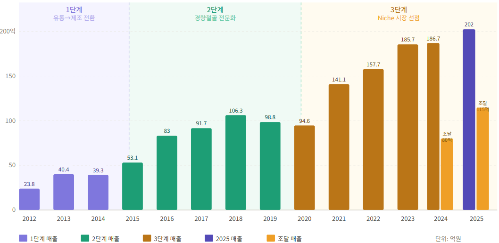
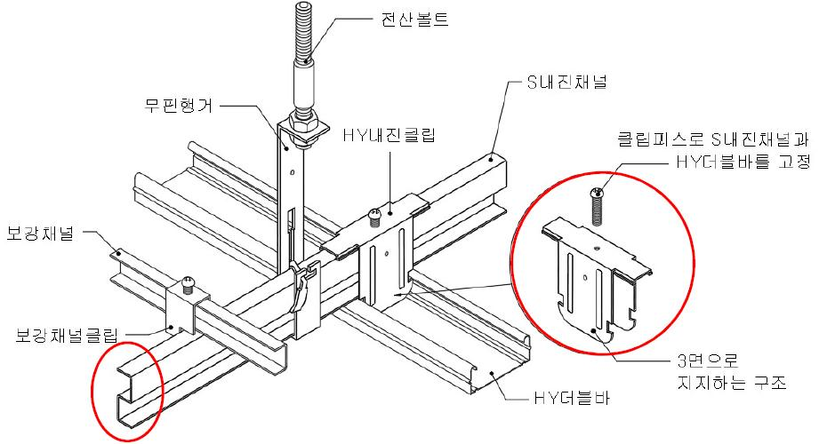
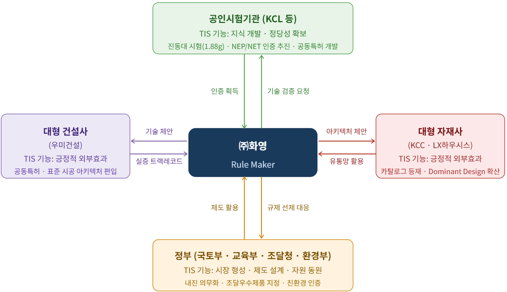
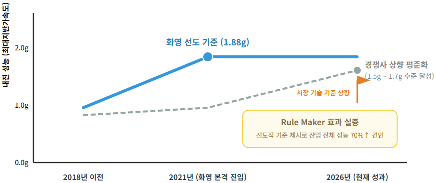

2016년 경주(규모 5.8)와 2017년 포항(규모 5.4) 지진에서 보고된 천장재 등 비구조요소 탈락 피해는 총 29,393건에 달했고, 이를 계기로 정부는 비구조요소 내진설계를 의무화했다. 대형 선발주자도 기술을 개발한 중소 선발주자도 메우지 못한 이 시장의 구조적 공백을, 2011년 설립된 후발 중소기업 ㈜화영이 메웠다. 본 사례연구는 자원이 제한된 후발 중소기업이 정부유발 수요충격(Government-induced Demand Pull Shock) 앞에서 어떻게 산업의 Rule Maker로 전환했는지를 아키텍처 혁신·동적역량·TIS의 통합 프레임으로 규명한다.
- 본 연구는 ㈜화영의 사례를 통해 자원이 제한된 후발 중소기업이 정부유발 수요충격(Government-induced Demand Pull Shock) 앞에서 어떻게 산업의 Rule Maker로 전환할 수 있는지를 규명한다.
- 분석은 아키텍처 혁신·동적역량·TIS(기술혁신시스템)의 통합 프레임으로 수행하였다.
- 화영은 형상 혁신으로 기술적 공백을 메우고, 제조-시공 일체형 구조에서 비롯된 이중 Sensing으로 수요충격에 선제적으로 대응하였으며, 연구기관·정부·대형 건설사·대형 자재사의 4개 행위자 축과의 전략적 연계를 통해 TIS 시스템 기능을 능동적으로 활성화함으로써 산업 표준을 주도하였다.
- 본 연구는 혁신 지향 공공조달 제도가 후발 중소기업의 시장 지위 역전을 가능하게 하는 제도적 가속기로 기능함을 실증하며 이론적·정책적 함의를 제시한다.
1. 서론 — 산업 환경의 변곡점과 구조적 공백
국내 경량철골 천장재 시장은 2010년대 중반, 복수의 충격이 단기간에 중첩되며 구조적 변곡점을 맞았다. 첫째 경주·포항 지진(비구조요소 탈락 피해 29,393건)과 이를 법제화한 국토교통부(2019)·교육부(2020)의 내진설계 의무화, 둘째 2025년 기준 30년 이상 경과 학교 건물 43.4%(약 28,216개 동)의 노후화, 셋째 1급 발암물질 석면 문제(정부는 2027년까지 교육시설 석면 천장재 전면 교체 추진), 넷째 불연 자재 의무화의 단계적 강화다. 이 변화는 기존 기술의 세 가지 구조적 한계 — 석면 텍스라는 소재의 위험, C형 캐링채널·더블엠바클립 방식의 내진 취약 구조, 하수급자 의존에 따른 시공 품질 편차 — 를 동시에 노출시켰다.
시장은 내진성·불연성·시공성을 동시에 충족하는 표준화된 시스템을 요구했으나 아무도 공백을 메우지 못했다. 유창·대한강재·대륭·신성강건 등 매출 300억~2,000억 원의 대형 선발주자는 표준 규격재 대량 생산에 최적화된 전략적 경직성으로, 기술을 개발한 중소 선발주자는 성능 신뢰성 부족·시공 복잡성·인증 전략 부재·사업화 전략 미흡이라는 4대 상용화 실패로 각각 좌초했다. 나라장터 기준 내진 천장재 등록 업체는 약 40~50개사이나 유의미한 시공 실적 보유 업체는 10개사 내외에 불과하다.
1.2 연구 대상: ㈜화영이라는 해답
이 공백을 메운 화영은 2025년 기준 매출 202억 원, 조달 매출 115억 원을 기록했다. 국내 최초 무석면 내진형 천장 판넬 시스템 개발, 조달청 우수제품 단독 지정(석고텍스 마감재 시장), 내진성능 업계 최고(1.88g, 경쟁사 대비 최대 88% 우위), 국토부 2026년 상반기 표준품셈 대비 46% 원가 절감이 그 성과다. 내진 천장재 조달 시장(약 2,500억 원) 내 점유율은 약 15~18%로 추정되며, 특히 '석고텍스 기반 내진 우수제품' 세부 품목에서는 70% 이상의 지배적 점유율을 기록하고 있다.
2. 이론적 배경 — 세 이론의 통합 프레임
연구는 화영의 다층적 혁신 메커니즘을 세 이론으로 분석한다. Architectural Innovation(Henderson & Clark, 1990)은 '무엇을 혁신했는가(What)' — 구성요소의 핵심 개념은 유지하되 연결 방식과 시스템 설계를 재편하는 혁신 — 를, Dynamic Capabilities(Teece, 2007)는 '어떻게 결정하고 움직였는가(How)' — Sensing·Seizing·Transforming의 메타역량 — 를, TIS: Technology Innovation System(Carlsson & Stankiewicz, 1991; Hekkert et al., 2007)은 '누구와 어떤 구조로 혁신했는가(With whom & Through what structure)' — 특정 기술 섹터 내 행위자·제도·네트워크의 시스템 기능 활성화 — 를 각각 설명한다. 연구는 지진이라는 외생 사건이 정부의 제도적 개입을 통해 급격한 시장 수요를 창출하는 현상을 'Government-induced Demand Pull Shock'으로 개념화하고, "동일한 Demand shock 앞에서, 왜 화영만이 그것을 누구보다 빠르게 포착하고 조직적으로 대응할 수 있었는가?"를 핵심 분석 질문으로 삼는다.
3. 연구방법론
연구는 Yin(2018)의 단일 사례연구(Single Case Study) 설계를 채택하고, 대표이사 박봉제 심층 인터뷰·화영 내부자료(1차), 나라장터·특허청·정부 정책 문서·언론 보도(2차), 학술 문헌(문헌 자료)의 복수 원천을 삼각검증(Triangulation)했다. 분석은 이론 기반 패턴 매칭(Theory-driven Pattern Matching) 방식으로 수행되었으며, 통계적 일반화가 아닌 분석적 일반화(Analytical Generalization)를 추구한다.
4. ㈜화영 사례 분석
4.1 기업 개요 및 3단계 성장 궤적
화영의 출발점은 창업자 박봉제 대표가 1987~2011년 PVC 창호 대기업에서 축적한 25년 현장 경험이다. 성장 궤적은 세 차례의 질적 전환으로 형성됐다. 1단계(2011~2014)는 PVC 창호 보강재 유통·제조 전환, 2단계(2015~2019)는 경량철골 전문화와 내실 경영, 3단계(2020~현재)는 기술 특화 Niche 시장 선점과 조달 Rule Maker 전환이다. 매출은 2012년 23.8억 원에서 2025년 202억 원으로 성장했고, 데스밸리 구간(2014~2016)과 범용재 한계 구간(2019~2020)을 포함해 단 한 해도 영업이익 적자 없이 흑자를 지속했다. 특히 매출총이익률(GPM)은 11.0%(2023)에서 19.7%(2025)로 V자형 반등해, 저가 수주 경쟁의 범용재 시장(Red Ocean)을 탈피하고 가격 결정권을 확보하는 경기장 교체(Arena Shifting)가 재무적으로 완성되었음을 보여준다.

4.2 Architectural Innovation — 형상 혁신을 통한 아키텍처 재설계
화영의 혁신은 화학적 신소재 개발이 아닌 기계적 구조 변경을 통한 성능 향상, 즉 '형상 혁신(Form Innovation)'이다. 이미 시장에서 검증된 범용 자재(아연도금강판, 범용 클립)를 활용하되 형상과 연결 방식을 최적화해 시스템 전체 성능을 향상시키는 전략으로, 화영 내부에서는 신소재 개발이라는 고비용 리스크를 전략적으로 거부하고 기존 자원을 재배치하는 '자원 거부성(Resource Refusal)'으로 개념화한다. 그 원천은 제조와 시공을 동시에 보유한 기업 구조에서 비롯되는 현장 기반 역설계(Reverse Innovation)로, '클립 풀림'·'시공 복잡성'·'자재비 과다' 등 현장 경험(암묵지)이 도면·특허 명세서(형식지)로 전환된다.
기존 지배적 설계였던 더블엠바클립은 캐링 채널에 손으로 눌러 고정하는 단순 면 접촉(Surface contact) 구조라 지진 진동 시 쉽게 풀렸다. 화영의 솔루션은 두 층위의 재설계로 구성된다. ① S-Channel 형상 혁신 — C자·U자형 단면을 S자형으로 재설계하자 구조 강도가 C자형 대비 2.6배 증가하고(KCL, 2022) 클립과 기계적 잠금(Mechanical locking) 효과가 형성됐다. ② 화영 내진 클립(디자인등록 30-1030167) — S-Channel의 3면을 모두 감싸는 구조로 이탈을 원천 방지했다. 여기에 비스(Screw) 체결과 크로스 결합을 더한 이중 체결 시스템으로, 부산대 지진방재연구센터(2019)와 KCL 진동대 시험(ICC-ES AC156, 2022)에서 최대 지반 가속도 1.88g를 달성했다. 이는 조달 우수제품 경쟁사 무진기업(1.20g) 대비 57%, 제이엔티(1.00g) 대비 88% 높은 값이다.

이론적으로 화영의 혁신은 구성요소의 핵심 개념(클립은 채널을 고정, 채널은 하중을 지지, 소재는 아연도금강판)을 유지하면서 연결 구조를 재편했다는 점에서 전형적 아키텍처 혁신이다. 반면 형상 크기를 키우고 연결 구조도 바꾸려 한 경쟁사들은 자재 투입량 증가로 원가는 높고 성능은 낮은 결과에 귀결되었다. 나아가 화영은 형상 보호(디자인권)·성능 보호(구조 특허)·공정 보호(시공법 특허)의 세 층위가 중첩된 IP 망(Patent Mesh) 전략으로 다중 잠금(Multi-lock) 구조를 형성해, 경쟁사가 유사 형상을 개발해도 동일 성능을 재현하기 어려운 '인과적 모호성(Causal Ambiguity)'을 구축했다.
4.3 Dynamic Capabilities — 경기장(Playing Field)의 교체
화영의 동적역량은 기존 역량을 개선한 것이 아니라 경쟁하는 시장 자체를 교체하는 방식으로 발현되었다. 낮은 진입장벽·가격 중심 경쟁·대기업 물량 우위가 지배하는 범용재 시장에서, 기술·인증·특허가 진입장벽으로 기능하는 기술 집약 Niche 시장으로 경기장을 옮긴 것이다. Teece의 프레임으로 보면, 창업자의 25년 사전 지식(Sensing)을 기반으로 PVC 창호 고정물 → PVC 보강재 → 경량철골 → 내진 천장 시스템 → 건식 벽체로 인접 영역을 순차 확장(Seizing)했고, 이천 1공장(2015)·화성 2공장(2021)의 이원화 생산 체계와 MES·WMS·QMS 도입으로 조직 운영을 재편(Transforming)했다.
특히 화영의 Sensing은 이중 경로로 작동했다. 내진설계 의무화·석면 교체 정책 등 제도적 신호를 선제 포착하는 제도적 Sensing과, 25년 현장 경험의 시장 지도(Mental map)에 기반한 사전 지식 기반 Sensing이 동일한 방향 — 기술 특화·인증 기반·Niche 시장 — 을 가리켰다는 점이 의사결정 속도를 높였다. Seizing은 높은 인증 장벽을 역으로 진입장벽으로 활용하는 자원 레버리지형이었고, Transforming은 각 전환이 다음 전환의 기반이 되는 복리 구조를 이뤘다. 그 결과 2023년 국내 최초 무석면 내진형 천장 패널 시스템을 개발하고 조달청 우수제품으로 지정받았다.
4.4 TIS — 산업 표준 설계자로의 전환
Hekkert et al.(2007)의 TIS 모델에서 시스템 기능의 활성화 주체는 통상 대기업 또는 정부로 전제되나, 화영은 이 전제에 정면으로 도전한다. 화영은 연구기관(KCL)·정부(국토부·교육부·조달청·환경부)·대형 건설사(우미건설)·대형 자재사(KCC·LX하우시스)의 4개 행위자 축과 연계해, 시스템 기능의 수혜자가 아닌 능동적 활성화 주체(Proactive activator)로 기능했다.
- 축1 KCL(정당성 확보): 진동대 시험(1.88g 공인)과 NEP·NET 인증 추진, 공동특허 개발로 기술적 정당성을 내재화했다.
- 축2 정부(시장 형성): 내진설계 의무화 고시 이전에 특허 출원을 착수하는 선제 대응으로, 규제를 경쟁사를 밀어내는 구조적 진입장벽으로 전환했다. 조달청 우수제품 지정(수의계약 가능, 2단계 경쟁 입찰 면제)으로 진입 첫 해에 통상 기간(3년)의 1/3 수준에서 유의미한 수주를 달성했다.
- 축3 우미건설(지식 확산): 2024년 7월 기술협력 MOU와 건식 벽체 시공법 공동특허(10-2820120)로 수평적 공동 개발 구조를 만들어, S-Channel 공법이 우미린 아파트 현장의 표준 시공 아키텍처에 편입되었다.
- 축4 KCC·LX하우시스(긍정적 외부효과): 대기업이 스펙을 제시하고 중소기업이 수행하는 하향식 구조를 역전해, 화영이 대기업 제품 로드맵에 기술 아이디어를 먼저 제안하는 상향식 협업을 실현했다. KCC 대규격 석고텍스 전용 내진 천장틀이 2022년 3월 KCC 공식 카탈로그에 등재되었다.

후발 중소기업이 TIS 생태계의 수혜자에서 설계자로 전환하려면 ①공인 검증을 통한 기술적 정당성 확보, ②규제 변화의 선제적 활용을 통한 시장 형성, ③대형 건설사와의 상향식 협업을 통한 지식 확산, ④대형 자재사 네트워크를 통한 긍정적 외부효과 창출이라는 네 조건이 순차적이 아니라 동시적으로 연동되어야 한다. 각 축의 성과가 다음 축의 진입 자산으로 전환되는 복리 구조가 지속 가능한 경쟁 우위를 만든다. 실제로 화영의 조달 우수제품 지정 이후 경쟁사들의 내진 성능 수치가 1.0g(2018)에서 1.5g 이상(2023)으로 향상되어, 화영의 기술 기준이 산업 전체의 성능 수준을 견인하고 있음이 나라장터 데이터로 확인된다.

5. 결론 및 시사점
화영의 성공은 형상 혁신(기술)·규제 변화의 전략적 활용(전략)·TIS 기반 생태계 설계(생태계)가 개별 성과에 그치지 않고 유기적으로 결합해 시너지를 창출한 결과다. 대형 선발주자의 전략적 경직성은 아키텍처 혁신으로, 중소 선발주자의 4대 상용화 실패는 경기장 교체와 인증의 전략적 자산화로, 시장 공백의 구조적 고착은 4개 행위자 축의 능동적 활성화로 각각 해소되었다.
- 발상의 전환: 가격 경쟁 레드오션에서 벗어나, 고위험 소재 개발 대신 기존 자원을 유지하며 연결 논리를 바꾸는 아키텍처 혁신으로 비가격경쟁 시장을 개척하고, 형상 변화를 특허로 보호해 조달 독점과 산업 표준으로 연결하는 수익의 복리 구조를 설계해야 한다.
- 시공의 R&D화: 대기업이 접근하기 힘든 현장을 R&D 거점으로 삼아, 현장 페인포인트가 제품 설계로 환류되는 구조로 복제 불가능한 암묵지(Tacit Knowledge) 장벽을 구축해야 한다.
- 규제를 기회의 창으로: "규제를 기다리는 기업은 대응하고, 규제를 예측하는 기업은 표준을 만든다." 규제 전환 국면은 선발주자와의 자원 격차가 일시적으로 무력화되는 기회의 창이다.
- 정책적 함의: 조달청 우수제품 제도가 혁신 역량을 갖춘 후발 중소기업이 시장 포지션을 역전하는 제도적 가속기(Institutional Accelerator)로 기능함을 실증했다. 다만 본 연구는 단일 사례연구이며, 추진 중인 NEP·NET 인증과 해외(일본·대만·인도네시아) 진출의 사후 성과 분석은 향후 과제로 남는다.